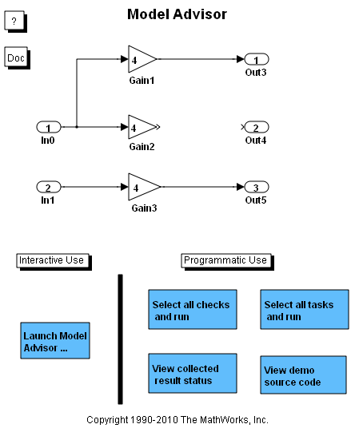

モデル アドバイザー
このデモでは、モデルまたはサブシステムの条件と設定を確認するための、モデル アドバイザーの機能を示します。これらの条件と設定が原因で、モデルによって表されるシステムのシミュレーションが不正確または不十分になったり、モデルから効率の悪いコードが生成されることがあります。モデル アドバイザーは、見つかった準最適条件または設定をすべて示すレポートを作成し、必要に応じてモデルの適切な設定を提示します。
モデル アドバイザーは、メニューまたはコマンド ラインを介して起動できます。モデル アドバイザーの設定と使用は、総合的な API を介して行うこともできます。
